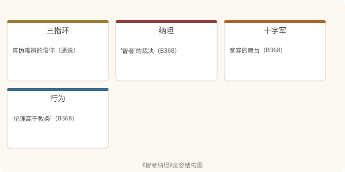

智者纳坦
一、基本信息
| 作者 | 多丽丝·莱辛 |
|---|---|
| 成书/出版 | 1779年（Britannica B368：Nathan der Weise (1779)——'His final drama'） Gotthold Ephraim Lessing — Encyclopaedia Britannica（百科全书） |
| 国别/地区 | 德国 |
| 时代 | 近代 · 18世纪70年代末 |
| 体裁 | 戏剧 |
| 语言 | 德语 |

《智者纳坦》宽容结构图（主题·结构图）
二、创作背景
Britannica（B368）：'advocates for religious tolerance during the Crusades'——十字军东征背景的宗教宽容剧。
Britannica（B368）：'The play suggests that ethical conduct, rather than dogma or prejudice, should determine the value of a religion.'
Britannica（B366）交叉：莱辛此剧已用素体诗（Nathan der Weise [1779]——B366）。
三、内容脉络
（通说待核——B368未载剧情）'三指环'寓言：犹太商人纳坦的裁决。
（通说待核）圣殿骑士、苏丹萨拉丁与失散的家庭。
四、主要人物表
| 人物 | 身份 | 说明 |
|---|---|---|
| 纳坦 | 犹太商人 | （B368 书名人物——'the Wise'） |
| 萨拉丁 | 苏丹 | （通说待核） |
五、主题与艺术特点
- 宗教宽容（B368：religious tolerance）。
- '行为而非教条决定宗教的价值'（B368）。
- 启蒙的'人类之爱'（通说待核）。
六、影响与评论
- Britannica：'advocates for religious tolerance'（B368）。
Gotthold Ephraim Lessing — Encyclopaedia Britannica（百科全书） - Britannica：素体诗的早期示范（B366 交叉）。
Friedrich Schiller — Encyclopaedia Britannica（百科全书）
七、阅读建议
难点
- 十字军东征背景。
- '指环寓言'的薄伽丘底本（通说待核）。
- 《智者纳坦》中译名（《智者纳旦》两说——通说待核）。
- 德文原版（公有领域）。
莱辛戏剧收官；与《拉奥孔》对读。
八、待核实
- '三指环'寓言细节核对（通说）。
- 1779年出版/首演细节待核。
- 中译名两说待核。